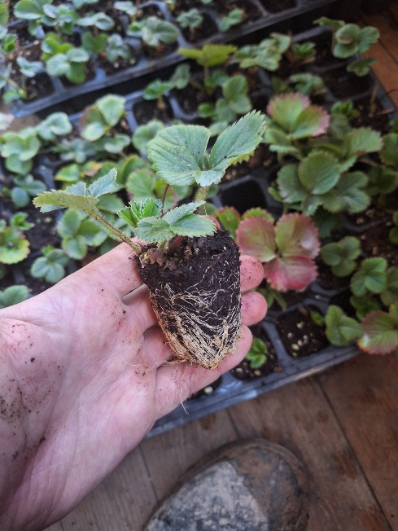
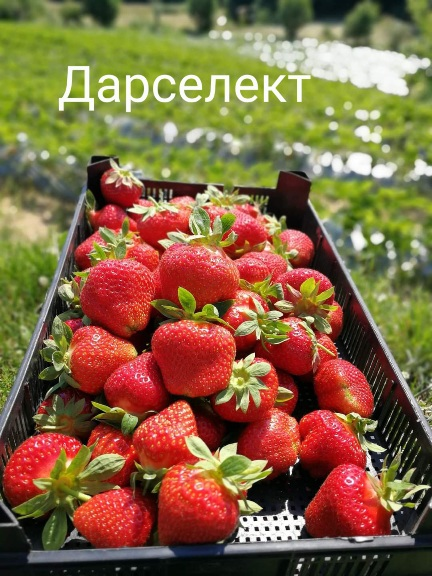
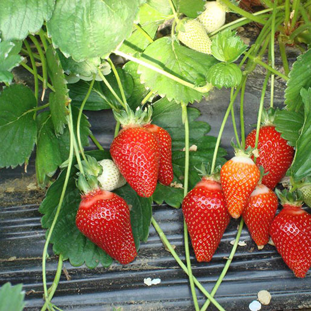

Предлагаме качествен разсад ягоди директно от производител. Сортове Дарселект и Азия с отличен вкус, аромат и висок добив.

Цена: 21 € / табли (70бр)
Дapceлekm (Darselect) Френски сорт ягоди е високодобивен, едри конусовидни плодове с отлични вкусови качества и силен аромат на ягоди. Подходящ е както за домашни, така и търговски цели, висок добив и добра транспортируемост. Средноранен плододаващ от средата на май до края на юни!

Цена: 21 € / табли (70бр)
Азия (Asia) Много едри плодове, с дълга конична форма, средна консистенция, но добра устойчивост на обработка. Яркочервени плодове и червена плът. Благодарение на отличните органолептични характеристики и дългия срок на годност, сортът „Азия" е добре ценен от производителите, които продават директно на обществеността и имат много взискателни клиенти, търсещи качествени продукти. Много големи добиви.
Вкоренени растения с отлично прихващане.
📞 Поръчки: 0877779963
⬅ Обратно към началната страница